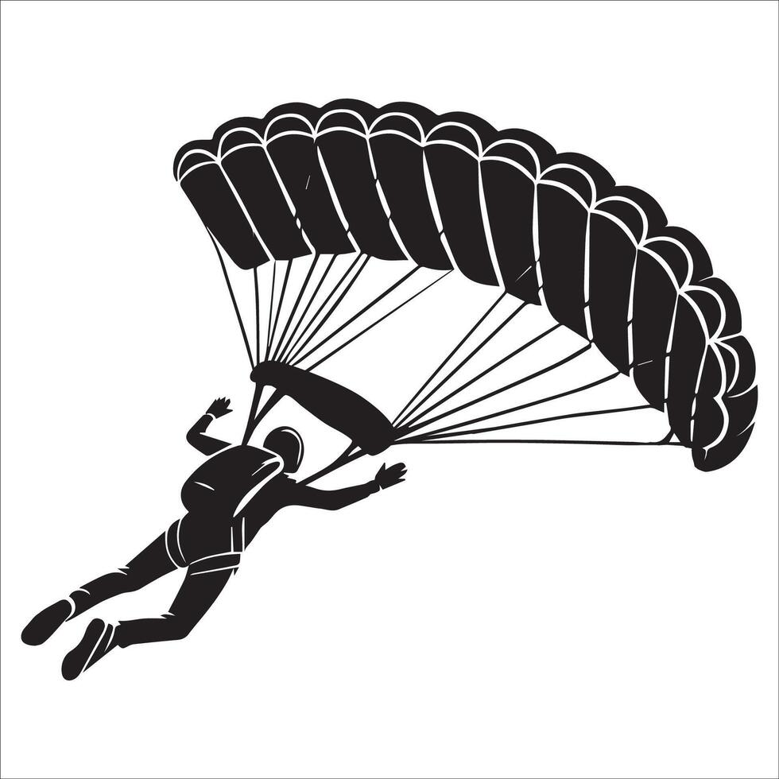
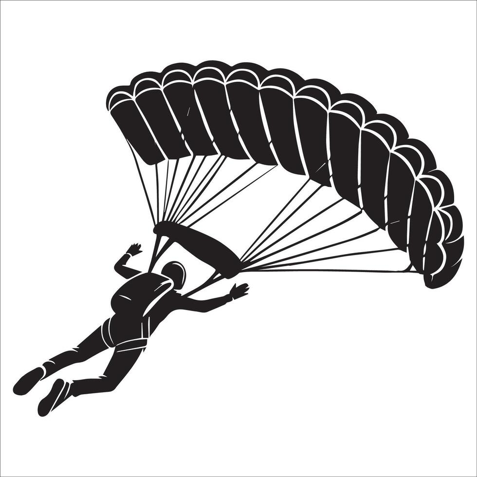

Guerreiros Abilat é uma organização dedicada a promover e praticar diversas modalidades esportivas e
atividades de aventura. Com uma equipe apaixonada e comprometida, buscamos oferecer experiências
emocionantes e desafiadoras para todos os nossos membros.
Nossa missão é incentivar a prática esportiva, promover o espírito de equipe e proporcionar momentos
inesquecíveis através de eventos, cursos e treinamentos especializados.
Junte-se a nós e descubra o verdadeiro significado de ser um Guerreiro Abilat!
CURSO MANUSEIO TÁTICO DE FACA
O curso de Manuseio Tático de Faca é projetado para ensinar técnicas avançadas de combate e defesa com
facas, visando aprimorar as habilidades dos participantes em situações de risco. Os instrutores são
profissionais experientes, capacitados para oferecer um treinamento seguro e eficaz.
Durante o curso, os participantes aprenderão sobre a história das facas, tipos de lâminas, técnicas de
ataque e defesa, além de práticas de combate corpo a corpo. O objetivo é preparar os alunos para
enfrentar situações adversas com confiança e habilidade.
CONTATO
Para mais informações sobre nossos cursos, eventos e atividades, entre em contato conosco através do
e-mail


 
